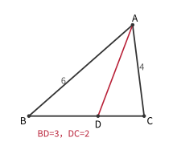

例題 1図形の性質 角の二等分線の長さ
△ABC で \(AB=6,\ AC=4,\ BC=5\) とする。\(\angle A\) の二等分線が辺 BC と交わる点を D とするとき、BD、DC、線分 AD の長さを求めよ。

【答案（テストに書く形）】
\[BD=3,\quad DC=2,\quad AD=3\sqrt2\]答
△ABC で \(AB=6,\ AC=4,\ BC=5\) とする。\(\angle A\) の二等分線が辺 BC と交わる点を D とするとき、BD、DC、線分 AD の長さを求めよ。

【答案（テストに書く形）】
\[BD=3,\quad DC=2,\quad AD=3\sqrt2\]答